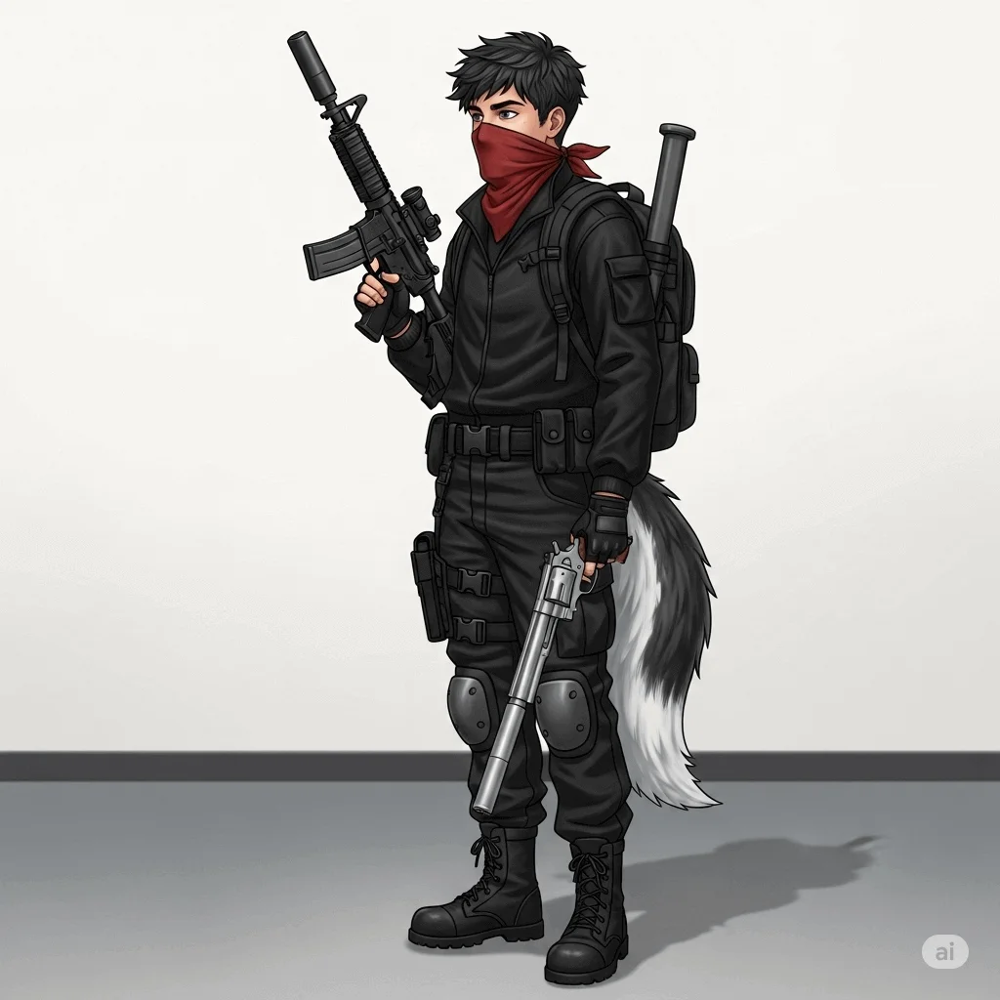

Expediente de M.Y.L
Este documento contiene información clasificada del personal de UPEA Corp. El acceso no autorizado está estrictamente prohibido.

Mixor Yorec López
Información Personal
Fecha de Nacimiento:
15/11/2003
Nacionalidad:
Española (Europeo)
Contacto de Emergencia:
NO DISPONIBLE
Información Organizacional
Departamento:
Fuerza de Intervención y Adquisición Táctica
Puesto/Rol:
Agentes de Campo Especializados
Nombre en Clave:
SENTINEL
Nivel de Acceso (División):
Nivel 3 - FIAT
Fecha de Ingreso:
29/05/2025
Estado Actual:
Activo
Historial Operativo Destacado
- [06/06/2025] - Operación Silueta Salvaje: Informes preliminares indican la presencia de siluetas humanoides o Entidades Antropoides Zoomorfas (EAZ), observadas en la penumbra de una zona urbana abandonada en Barcelona.
- [12/06/2025] - Detalles de la Operación: A pesar de la expectativa, no se hallaron formas humanoides o Entidades Antropoides Zoomorfas (EAZ); no obstante, se recolectaron y resguardaron muestras pertinentes.
- [18/06/2025] - Incidentes: La Operación Silueta Salvaje transcurrió sin incidentes significativos, a excepción de un avistamiento de una silueta humanoide o Entidades Antropoides Zoomorfas (EAZ) durante el retorno vehicular, que resultó en una colisión contra una farola a medianoche.
Evaluación de Desempeño Reciente
- Última Evaluación: [22/06/2025] por Kaiser
- Puntuación General: 475.78/500
- Observaciones: La observación más destacada es la ausencia total de Entidades Antropoides Zoomorfas (EAZ) en la zona, a pesar de los informes preliminares que las situaban allí. Este hecho plantea interrogantes fundamentales sobre la naturaleza, la movilidad o la capacidad de evasión de estas entidades. El incidente vehicular, si bien menor en su impacto material, subraya la influencia psicológica y operacional que la percepción de fenómenos anómalos puede tener en el personal, incluso sin contacto directo, y la necesidad de incorporar este factor en la planificación de futuras misiones.
- Fortalezas: Fortalezas clave incluyeron una rápida capacidad de despliegue ante los informes iniciales y una adherencia eficaz a los protocolos de recolección de muestras, asegurando evidencia relevante. Se destaca también un manejo post-incidente adecuado, reflejado en el registro del suceso vehicular.
- Áreas de Mejora: Se identifica la necesidad de mejorar la evaluación de riesgos en entornos anómalos, especialmente en lo que respecta a la gestión de la percepción y reacción del personal ante avistamientos inesperados durante el retorno. Es crucial optimizar la inteligencia pre-operacional para reducir discrepancias entre los informes y la realidad del terreno, así como reforzar los protocolos de evacuación y el entrenamiento en reconocimiento de amenazas visuales nocturnas para garantizar la seguridad del personal en todas las fases de la misión.
Notas Adicionales y Autorizaciones
- Autorizaciones Especiales: El personal operativo contaba con Acceso a la Zona de Exclusión Designada (ZEB-Barcelona), permitiendo su entrada a la zona abandonada clasificada. Adicionalmente, estaban certificados para el Manejo de Equipo de Detección de Campo Avanzado (EDCA-Serie Quimera), vital para la identificación de firmas anómalas, y disponían de Permiso para el Despliegue de Vehículos Adaptados para Terreno Irregular, facilitando la movilidad en el área operativa.
- Historial Médico Relevante: La evaluación médica del personal se realizó conforme a los estándares operativos para misiones de campo en entornos potencialmente estresantes y físicamente exigentes, asegurando la idoneidad y preparación de todos los miembros del equipo antes del despliegue.
- Notas de Supervisor: El supervisor destacó la ejemplar ejecución del reconocimiento dadas las difíciles condiciones y la naturaleza elusiva del objetivo. Sin embargo, enfatizó la necesidad crítica de revisar y fortalecer los protocolos de seguridad y reacción ante estímulos visuales ambiguos durante el repliegue, en vista del incidente vehicular. Se recomendó un debriefing exhaustivo para analizar el impacto psicológico de tales percepciones en el personal y se sugirió una investigación de inteligencia para esclarecer la discrepancia entre los informes iniciales y la ausencia de EAZ en el terreno.